We changed our name
Same team.
Same mission.
New name.
Cantorix (formerly Vibrant Medical)
Cantorix is the name for our next stage, the move into clinical, built around technology that senses the problem long before anyone else can.
Our email addresses now end in @cantorixmed.com.
Continue to Cantorix